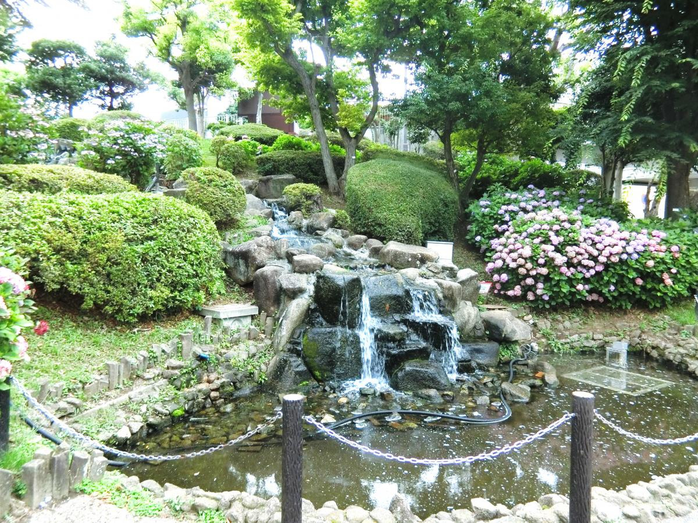

南口側で気軽に立ち寄る
津田沼公園は、JR津田沼駅の南口側にある公園です。駅前の街並みを眺めながら、散歩の途中に立ち寄る場所として紹介します。
大学の近くで散歩を楽しみたい人におすすめです。周辺を歩きながら、街路樹や空の様子にも目を向けてみましょう。
散歩の楽しみ方
南口側の街を歩くときの立ち寄り先にしてみてください。同じ場所でも、季節や時間帯によって景色の印象が変わります。

津田沼公園は、JR津田沼駅の南口側にある公園です。駅前の街並みを眺めながら、散歩の途中に立ち寄る場所として紹介します。
大学の近くで散歩を楽しみたい人におすすめです。周辺を歩きながら、街路樹や空の様子にも目を向けてみましょう。
南口側の街を歩くときの立ち寄り先にしてみてください。同じ場所でも、季節や時間帯によって景色の印象が変わります。